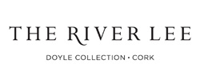
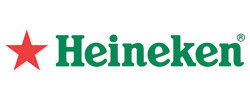
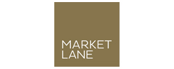
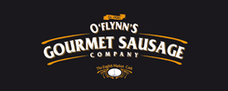
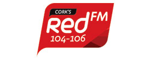
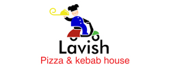
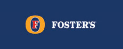
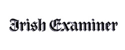
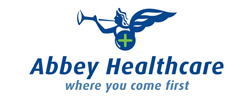

Cork County Cricket Club
WELCOME TO CORK COUNTY CRICKET CLUB
Munster’s premier and most successful cricket club located in the heart of Cork City. Cricket has been played at the Mardyke since 1874 and continues to be home of cricket in Munster with a large and vibrant membership encompassing all ages and abilities. 2016 Cricket Ireland Club of the Year and a Level 2 Accredited Club. Please use the site to stay up-to-date with the latest news and events.
Main club Sponsor
Club Partners
 
2018 Season Sponsors
   
  